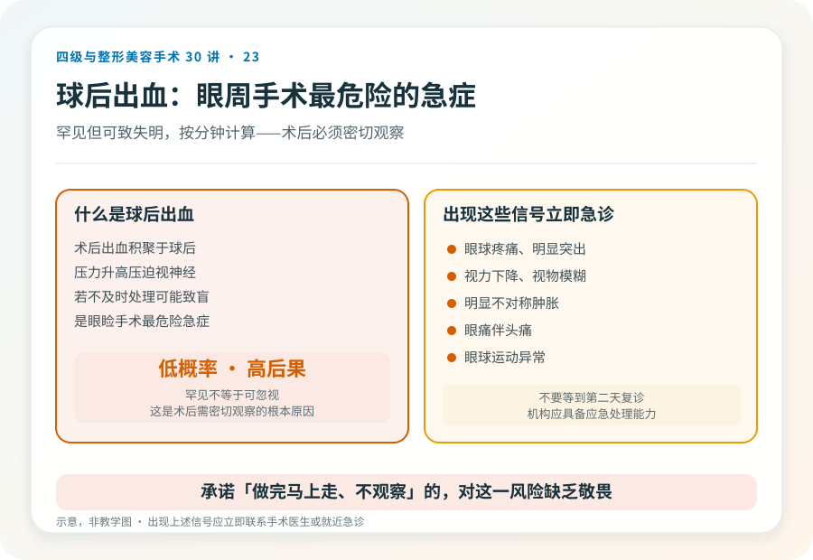
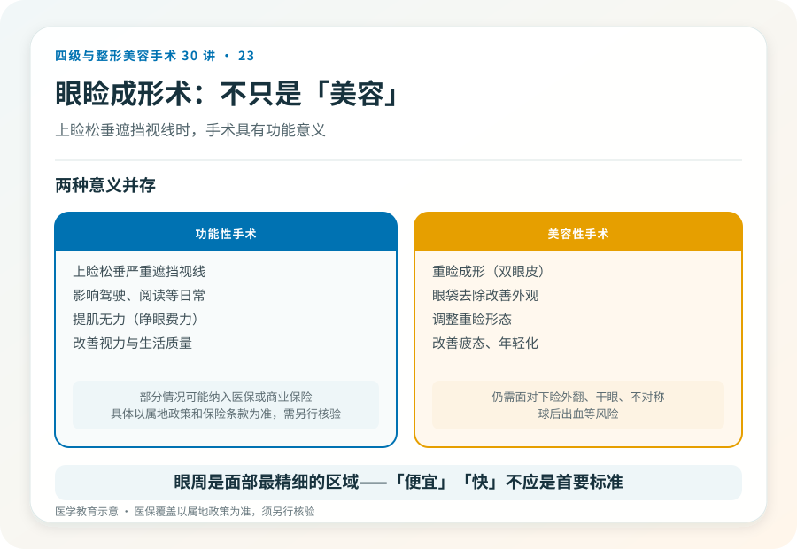

先说结论：眼睑成形术（blepharoplasty）包括上睑成形（重睑、上睑松垂切除）和下睑成形（眼袋去除）。它既改善外观，也可解决功能问题（如上睑松垂遮挡视线）。眼周解剖精细、与眼球和泪器关系密切，手术虽不属于最高级别，但有干眼、下睑外翻、不对称等需要正视的风险。把它当成“小项目”会低估它的精细度要求。
先分清眼周问题的来源
- 上睑松垂：上睑皮肤松弛下垂，严重者遮挡视线，可能影响驾驶和阅读。处理以上睑皮肤切除为主，常联合重睑。
- 单眼皮/重睑形态：希望形成双眼皮或调整重睑形态。
- 眼袋：眶隔脂肪疝出，下睑膨隆、显疲态。处理以去除或重分布脂肪为主。
- 下睑松垂、泪沟：下睑皮肤松弛、泪沟凹陷。
- 上睑下垂（提肌问题）：上睑提肌无力，睁眼费力，需要功能性手术（提肌缩短或缩短），不是单纯双眼皮能解决。
- 内眦赘皮、眼型基础：影响重睑设计和效果。
关键区分：上睑下垂（提肌无力）和上睑松垂（皮肤多余）是两回事，处理方式完全不同。把提肌问题当成皮肤松弛处理，效果不佳。
手术大致怎么做
- 上睑成形：经重睑线或睑缘切口，切除多余皮肤、部分眼轮匝肌或脂肪，形成或调整重睑。
- 下睑成形：经结膜（内切，无外部疤痕）或经睫毛下（外切）入路，去除或重分布脂肪，必要时切除多余皮肤。
- 上睑下垂矫正：提肌缩短或悬吊，属功能性手术，技术要求更高。
麻醉通常为局部麻醉，复杂者可加镇静或全麻。
几个必须正视的风险
- 下睑外翻或下睑退缩：下睑成形术特有的并发症，表现为下睑外翻、露白、流泪、外观异常，严重者需要修复。
- 干眼：手术可能影响泪液分布，原有干眼者风险更高，术前应评估泪液。
- 不对称、重睑形态不佳：左右差异、重睑过宽过窄、形态不自然，可能需要修整。
- 球后出血：罕见但严重，可致失明，是眼睑手术最危险的急症，需立即处理。
- 感染、伤口愈合不良。
- 疤痕：上睑疤痕多隐藏在重睑线，下睑外切疤痕在睫毛下。
- 闭合不全：切除过多皮肤可致眼睑闭合不全，暴露角膜。
- 矫正不足或过度（尤其上睑下垂）。
- 视力影响：罕见但严重。
球后出血这个“低概率高后果”风险
眼睑手术罕见但最危险的并发症是球后出血，术后出血积聚于球后，压力升高可压迫视神经，若不及时处理可能致盲。这是为什么眼睑成形术后需要密切观察、且机构应具备应急处理能力的原因。承诺“零风险”或“做完马上走不观察”的，对这一风险缺乏敬畏。
哪些人不适合做
- 严重干眼症未评估和处理者。
- 眼部活动性感染、炎症。
- 凝血异常。
- 上睑下垂误诊为皮肤松弛（术式不对）。
- 眼球突出、甲状腺相关眼病活动期（风险升高，需专科评估）。
- 对“对称”“无痕”抱有不切实际期待者。
功能性 vs 美容性
上睑松垂严重遮挡视线时，手术具有功能意义，部分情况可能纳入医保或商业保险（具体以属地政策和保险条款为准，需另行核验）。这提示眼睑成形术不只是“美容”，它有时是改善视力和生活质量的功能手术。
决策前的硬要求
面诊眼睑成形，至少做到：选择有资质、有眼周经验的机构和主刀；当面评估上睑松垂/眼袋/上睑下垂/泪沟/干眼状况；讨论术式、切口、是否联合其他项目；理解下睑外翻、干眼、球后出血等风险；确认机构具备术后观察和应急处理能力。眼周是面部最精细的区域之一，“便宜”“快”不应是首要标准。
本文用于健康教育，不能替代面诊和个体化评估；眼睑成形术须在有相应资质的医疗机构由具备权限的医师开展。